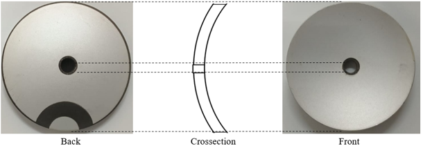
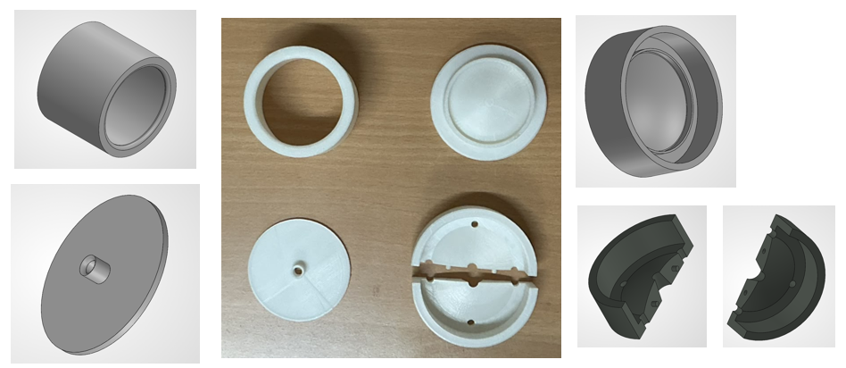
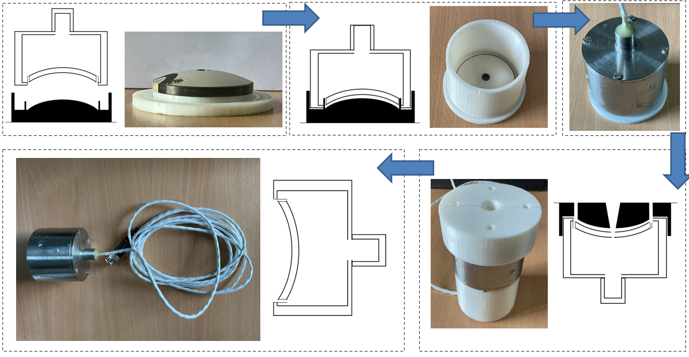

Focused Ultrasound Transducer
Design and Fabrication of a Spherical-Cap Piezoelectric Transducer for Focused Ultrasound Generation
The development of focused ultrasound systems requires a carefully designed piezoelectric transducer capable of converting electrical excitation into acoustic energy with a controlled spatial distribution.
Spherical-cap piezoelectric transducers offer a curved radiating surface that provides the geometric configuration required for acoustic focusing.
However, achieving reliable operation requires more than the selection of an appropriate piezoelectric element.
Proper encapsulation, electrical insulation, acoustic backing, and front-layer preparation are equally important for ensuring mechanical stability and effective acoustic transmission.
In this work, a spherical-cap piezoelectric crystal procured from FBELE was encapsulated at NPOL under supervision.
The fabrication process involved preparing the electrical connections, developing a nickel-nanopowder-loaded epoxy backing material,
machining a stainless-steel enclosure, and subsequently encapsulating the transducer using separate backing and front layers.
Transducer Preparation and Material Selection
The initial step involved preparing the piezoelectric crystal for encapsulation. A Teflon-insulated cable was electrically soldered to the transducer to facilitate low-noise signal transmission. The Teflon sheath was subsequently removed up to the intended encasing height to allow proper adhesion between the epoxy resin and the cable. A primer (Parker Chemlok 219) was applied to the internal surface of the stainless-steel enclosure to improve epoxy-to-metal adhesion. The encapsulation employed two principal material systems: a nickel-nanopowder-loaded epoxy for the backing layer and an epoxy or polyurethane-based material for the front layer. The backing material was intended to suppress acoustic transmission through the rear of the transducer, while the front layer provided the encapsulation over the curved radiating surface.

Preparation of Acoustic Backing Material
The backing material was prepared by incorporating nickel nanopowder into epoxy resin at a concentration of 1% by mass (1 g of nickel nanopowder per 100 g of epoxy resin). Initially, the nanopowder was ground thoroughly using a mortar to eliminate agglomerates and subsequently heated in an oven at 100 °C for approximately 40–45 minutes to remove moisture. The dried powder was mixed with epoxy resin using a mechanical stirrer for approximately 10 minutes, followed by sonication for 30 minutes to improve dispersion. A hardener was then incorporated at a resin-to-hardener mass ratio of 10:1. Before pouring, the mixture was placed inside a vacuum chamber for approximately 1–2 minutes to eliminate entrapped air bubbles. This preparation sequence was adopted to obtain a uniformly dispersed, bubble-free backing compound suitable for transducer encapsulation.
Stainless-Steel Enclosure and Encapsulation
The outer enclosure was designed using stainless steel and machined from a cylindrical block of approximately 6.5 cm using a milling machine.
The enclosure consisted of two principal components: a supporting base and a curved housing designed to accommodate the spherical-cap piezoelectric crystal.
The crystal was positioned with its concave side facing outward, maintaining the intended orientation of the radiating surface.
A dedicated mould was prepared to hold the crystal and enclosure in their required positions during encapsulation.
A small clearance was maintained between the crystal edges and the enclosure to prevent unintended electrical contact.
The clearance was subsequently filled with epoxy resin to provide electrical isolation and mechanical support.
Before pouring, the mould and the concave surface of the crystal were treated with mould-release spray and wax to facilitate subsequent demoulding.
The enclosure was secured using clay to prevent resin leakage.
Initially, a conventional epoxy resin-hardener mixture was prepared at a 10:1 mass ratio and poured to a height of approximately 1.5 cm, sufficient to secure the electrical connections.
After allowing this primary layer to partially set, the prepared nickel-loaded backing material was poured into the enclosure up to the brim.
The rear housing was then secured using screws, with the electrical cable routed through the central bore.
Additional backing material was introduced into the bore to seal the rear portion of the transducer.
The assembly was allowed to cure for at least 24 hours, with continuous inspection for leakage during the initial setting period.

Front-Layer Encapsulation and Final Assembly
Following the curing of the backing layer, the mould and clay were carefully removed without disturbing the piezoelectric crystal. A separate mould was then prepared for the front-layer encapsulation. The transducer was positioned upright, with the electrical cable facing downward and the curved radiating surface facing upward. The mould was secured over the assembly using clay and additional clamps to prevent leakage during pouring. Epoxy resin with hardener or polyurethane was prepared for the front layer using the corresponding material preparation procedure. The mixture was slowly introduced through the mould openings, with particular attention given to identifying and removing trapped air bubbles. The assembly was subsequently allowed to cure for approximately 24 hours, while the mould was periodically inspected for leakage during the initial curing period.
